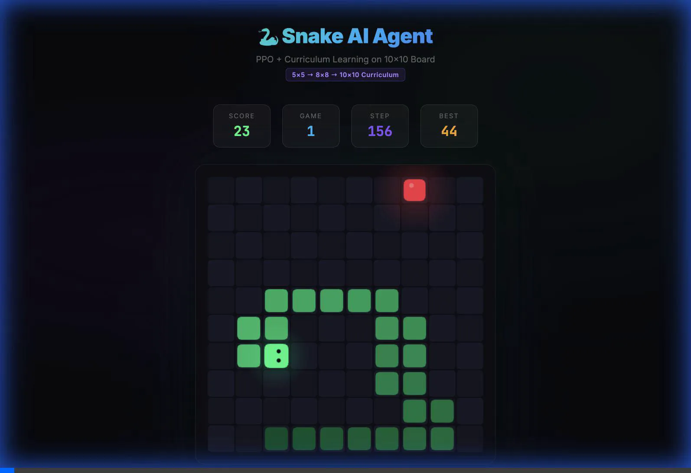
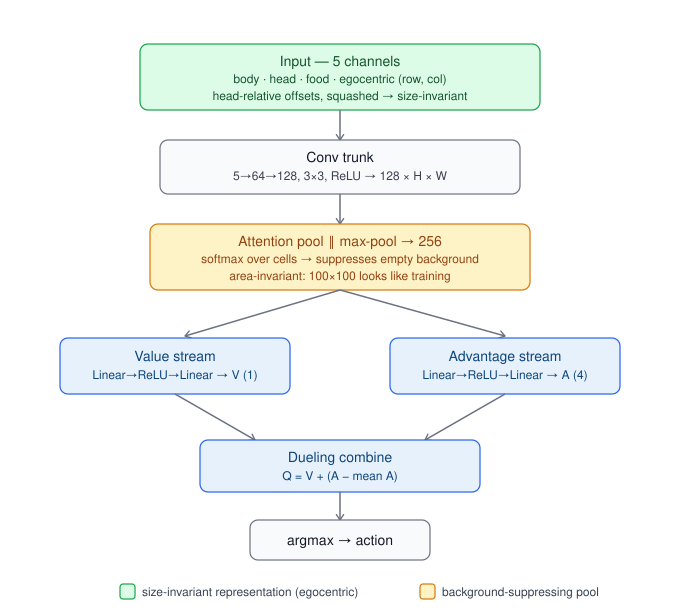

A full journey through modern reinforcement learning on Snake — from tabular Q-learning through ConvNets to a mechanistic investigation of size generalization — with interactive notebooks, real training logs, and honest empirical results.

Final PPO agent after the 5×5 → 10×10 curriculum
Interactive Notebooks
Curiosity Killed the Snake
Does the Intrinsic Curiosity Module (Pathak et al., 2017) actually help? A 2×3×2×3 ablation across DQN, PPO, three reward modes, two boards, three seeds. Includes the death-oversampling trap and the terminal-mask fix.

ConvNet vs Feature DQN
Can raw grid pixels beat 24 hand-crafted features? A 30-trial W&B hyperparameter sweep, architecture walkthrough, and RND exploration ablation. ConvNet v3 reaches mean 12.32 on 10×10 vs Feature DQN's 5.50.
A Snake Agent That Scales
Play the cross-size agent trained only on boards 6–22 — it navigates up to 100×100 zero-shot. Loads the shipped 824 KB model; pick any board size and watch it go.
Size Generalization — one agent, any board
A "size-agnostic" ConvNet (fully convolutional + global pooling, so it runs on any board) trained on 6×6 should play 16×16 — same game, bigger board. It doesn't: it random-walks by board ~16. A mechanistic investigation into why, ending in a fix — one agent, trained only on boards 6–22, plays 100×100 zero-shot.
Zero-shot transfer to 100×100 · toward-food % (never trained above 22)
| Board (zero-shot) | 6 | 16 | 32 | 64 | 100 |
|---|---|---|---|---|---|
| single-size (6×6) — toward-food % | 87 | 51 | 50 | 50 | 50 |
| single-size (10×10) — toward-food % | 92 | 59 | 50 | 50 | 50 |
| curriculum (6–22) — toward-food % | 88 | — | 96 | 98 | 98 |
toward-food % = fraction of greedy moves that reduce distance to food (50% = chance). The curriculum agent also eats ~86 food per game on 100×100, a board it never trained on. A bigger single training board just moves the cliff outward (6×6 → chance by 16, 10×10 → by ~32); only training across a range of sizes removes it.
What we found
- Decodable ≠ used. The pooled representation still encodes food-direction at every size (a refit probe reads it at 0.90), yet the frozen policy can't act on it — the food-steering margin collapses 5× while the danger margin stays invariant.
- Probe fixes ≠ behaviour fixes. Architectural changes (attention pooling, coordinate channels) each improved their mechanistic probe while doing nothing — or hurting — real-play transfer. A cautionary tale about probe-guided design.
- Root cause is coverage, not architecture. 71–88% of big-board play is outside the 6×6 training support — "far from all walls" is geometrically impossible on 6×6 yet dominates big boards. No architectural trick fixes a policy on states it never saw.
- The fix. A size-invariant representation (egocentric relative coordinates + attention pooling — big boards look like training near the head) plus training coverage across a size range → clean extrapolation 4.5× past the largest training board.
- Performance rises with board size because larger boards remove constraints: wall interactions fall 54%→1%, collision rate ~22× lower, survival ~90× longer.
The final agent

Tiny (~209K params, 824 KB) and shipped in the repo. Full narrative — every probe, ablation, and dead-end — in FINDINGS.md; overview in size_transfer/README.
Earlier experiments
The road here — from a tabular agent on a 5×5 grid, through curriculum PPO that first mastered 10×10, to ConvNets that beat hand-crafted features. (Full detail is in the two notebooks above.)
ConvNet vs hand-crafted features · mean food eaten
10×10 board · 10k games · 3 seeds
16×16 board · 16k games
The curriculum journey watch the replay →
| Phase | Algorithm | Board | Max Score | Notes |
|---|---|---|---|---|
| 0 | Tabular Q-Learning | 5×5 | 24 ✓ | Perfect on small board |
| 1 | Double Q-Learning | 5×5 | 24 | Stable convergence |
| 2 | Behaviour Cloning + PPO | 8×8 | 46 | Human demos bootstrap policy |
| 3 | PPO + Curriculum (5→10×10) | 10×10 | 64 | Progressive board growth |
Curiosity (ICM), in one table
| Question | Answer |
|---|---|
| Does ICM help DQN with dense reward? | No — |Δ| < 0.05 |
| Does ICM rescue DQN under sparse reward? | No — |Δ| < 0.15 |
| Does dense shaping matter for DQN? | Yes — ~15% score drop without it |
| Does ICM help PPO under sparse reward? | Yes — +24% on pure_sparse 10×10 |
| Does ICM increase state coverage? | No — both saturate at ~99% |
ConvNet sweep findings
- n_steps=1 universally better with PER — appeared in every top sweep config; multi-step returns hurt with prioritised replay
- ch1=64 / ch2=128 — larger second conv layer consistently wins over ch1=32/ch2=64
- epsilon_end=0.01, gamma=0.995 — exploit harder, value distant food more
- RND null result — saturation on sparse boards; curiosity helps weak baselines, not well-tuned agents
Running Locally
git clone https://github.com/Saheb/rl-snake.git
cd rl-snake
uv sync
uv run marimo edit notebooks/curiosity.py
uv run marimo edit notebooks/convnet.py
uv run marimo edit notebooks/size_generalization.py # play the cross-size agent (6→100)